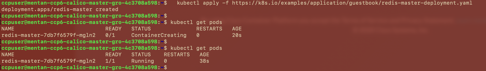
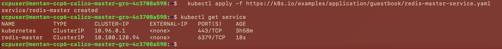
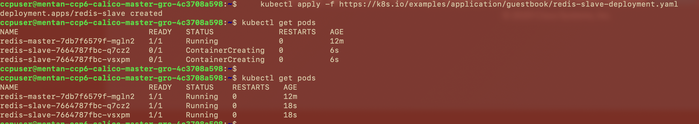
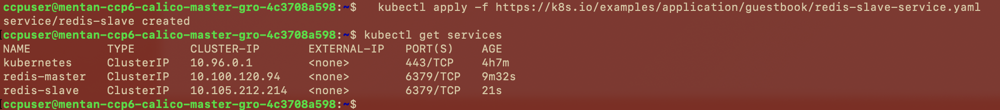
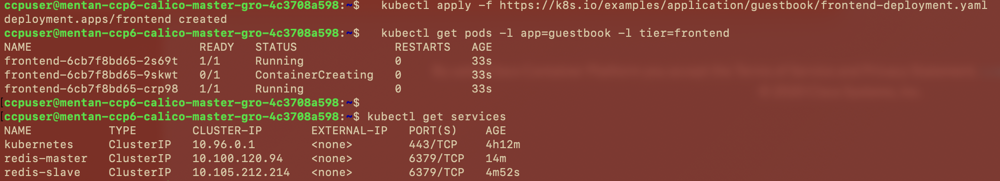
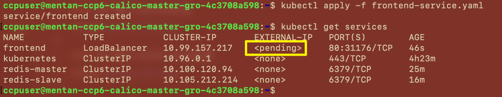

部署Guestbook容器应用
Guestbook部署参考链接：
https://kubernetes.io/zh/docs/tutorials/stateless-application/guestbook/
1. SSH登录Group Master Node
SSH login to group master node
2. 部署Redis主Deployment
deploy redis main deployment
kubectl apply -f https://k8s.io/examples/application/guestbook/redis-master-deployment.yaml

3. 创建Redis 主节点service
create Redis master node service
kubectl apply -f https://k8s.io/examples/application/guestbook/redis-master-service.yaml

3. 创建Redis 从节点deployment
create Redis worker node deployment
kubectl apply -f https://k8s.io/examples/application/guestbook/redis-slave-deployment.yaml

4. 创建Redis 从节点service
create Redis worker node service
kubectl apply -f https://k8s.io/examples/application/guestbook/redis-slave-service.yaml

5. 创建留言板前端 Deployment
create guestbook front-end deployment
kubectl apply -f https://k8s.io/examples/application/guestbook/frontend-deployment.yaml

6. 创建留言板前端 service
create guestbook front-end service
下载frontend service yaml file
wget https://k8s.io/examples/application/guestbook/frontend-service.yaml
编辑yaml文件，将type: NodePort 改为type: LoadBalancer
apiVersion: v1
kind: Service
metadata:
name: frontend
labels:
app: guestbook
tier: frontend
spec:
# comment or delete the following line if you want to use a LoadBalancer
type: LoadBalancer <<<<<<<<<<<
# if your cluster supports it, uncomment the following to automatically create
# an external load-balanced IP for the frontend service.
# type: LoadBalancer
ports:
- port: 80
selector:
app: guestbook
tier: frontend
应用新的yaml文件
kubectl apply -f frontend-service.yaml
